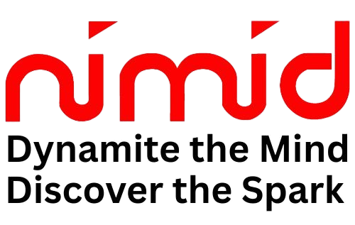

आव्हानच्या फेब्रुवारी अंकात Friday Folder System कशी सुरू झाल्याची गोष्ट “छोटासा बदल” या सदरात दिली होती. त्यात म्हटल्याप्रमाणे सर्वांनी दर गुरुवारी आपला आठवड्याचा
अहवाल लिहायला सुरुवात केली. हे सर्व अहवाल; आमच्या संस्थेच्या कार्यपद्धतीमध्ये ज्यांनी आमुलाग्र बदल आणला त्या Organization Development Manager म्हणून खास पद केलेल्याची
नंदू भेंडे यांच्याकडे दिले जात व ते हे सर्व अहवाल काळजीपूर्वक वाचून, स्वतःचे मत नोंदवून माझ्याकडे पाठवत. (जे आम्ही शुक्रवारी Review करून अधिकाऱ्यांना पुढच्या आठवड्याच्या सूचना देत असू.)
आमच्या कर्मचाऱ्यांमध्ये राजगोपाल नावाचे एक तरूण अधिकारी होते व त्यांचे काम Administrative Officer होते; म्हणजे ऑफिसमध्ये लागणाऱ्या सर्व गोष्टी आणणे;
दुरुस्ती करून सर्व उपकरणे व Facilities चालू ठेवणे, कर्मचाऱ्यांची प्रवास व्यवस्था पाहणे, म्हणजे तिकीटे काढणे. थोडक्यात असे जे अधिकारी असतात ते बहुधा सर्व ‘सांगितलेली’ कामे करतात.
तशी ते करत होते.
यांच्या मी दोन-तीन गोष्टी लिहिणार आहे पण यावेळी मला महत्त्वाची गोष्ट सांगायची म्हणजे हे एकटेच Friday Report लिहित नव्हते. त्यांना दोन-तीन वेळा सांगून; समज देऊन पाहिले पण
प्रत्येक वेळी काहीतरी कारण सांगून देत नसत.
मी भेंडे यांच्याकडे जेव्हा-जेव्हा चौकशी केली तेव्हा भेंडे यांनासुद्धा आपण काही त्याला शिस्त लावू शकत नाही हे कबूल केले; एवढेच नव्हे तर पडेल ते काम करणाऱ्यांना अशी शिस्त लागणे
कठीणच, असा त्यांचा अनुभव मला सांगितला. वस्तुतः राजगोपाल हे अत्यंत आज्ञाधारक होते (पण तसेच स्पष्ट बोलणारे, एकदा ऑफिसमधून जाताना त्यांना मी माझे ब्लेड आणायला जातो
म्हटले तर त्यांनी लगेच मीच आणतो म्हटले. मला संकोच वाटला, मी म्हटले, मी माझी वैयक्तिक कामे कोणाला सांगत नाही. तर त्यांनी मलाच सुनावले, “तुम्ही ब्लेडसाठी वेळ घालवण्यापेक्षा
कंपनीच्या उन्नतीचा विचार करण्यात घालवा, ब्लेडसारखे क्षुल्लक काम आम्हा लोकांवर सोडा”.)
अर्थात ODM यांनी हात टेकल्यावर मी एका गुरुवारी सकाळी राजगोपालांना बोलावून सांगितले की आज तुम्ही दुसरे काही न करता तुमचा अहवाल लिहा. अर्थात् त्यांनी “आता एक महत्त्वाचे काम
करून आलो की लिहितो” हे नेहमीचे उत्तर दिल्यावर, मी दुसऱ्या कर्मचाऱ्याला बोलावून सांगितले; की आज राजगोपालांचे काम तुम्ही करा; कारण राजगोपाल माझ्या शेजारच्या खोलीत बसून अहवाल
लिहिणार आहेत. (इथे माझी एक खासियत नमूद करतो. माझ्या Cabin च्या बाजूच्या खोलीत माझा Staff बसत असे; पण एक Table नेहमी रिकामे असे. मी माझ्या Cabinचा दरवाजा उघडा ठेवला
की मला दिसत असे. तिथे मी नेहमी, टोलवाटोलवी करणाऱ्यांना बसायला लावून “काम होईपर्यंत उठू नका” ची ताकीद देऊन काम करून घेत असे. ही बाब सर्वश्रुत होती.)
तेव्हा राजगोपालने स्वतः टेबलवर जाऊन लिहायची परवानगी मागितली. मी दिली. ‘अर्थात् शिरस्त्याप्रमाणे’ Peon त्यांना टेबलपर्यंत घेऊन गेला. अर्ध्या एक तासानी अहवाल (चांगला
७-८ पानाचा) आला. मी भेंडे यांच्याकडे द्यायला सांगितला.
दुसऱ्या दिवशी शुक्रवारी भेंडे यांनी माझ्याकडे तक्रार केली की राजगोपाल यांनी त्यांच्या अहवालात असे इंग्रजी शब्द वापरले आहेत की त्यातल्या अनेक शब्दांचा अर्थ न समजल्याने तो अहवाल
ते घरी घेऊन गेले व Dictionary घेऊन त्यांना अर्थ शोधावे लागले. पण अर्थात् “त्यांना काय सांगायचे आहे तेच न कळल्याने मी नाद सोडून दिला व Report तसाच परत केला”.
(भेंडे यांना स्वतःच्या इंग्रजी भाषेच्या ज्ञानाचा सार्थ अभिमान होता. ते पानच्या पान अत्यंत Effective English मध्ये लिहित. ते जेव्हा पत्र लिहित तेव्हा ज्याला पत्र लिहायचे आहे,
त्यांचा दर्जा ओळखून भाषा बदलत असत.)
मी अहवाल मागवला. अर्थात् त्यात जडजंबाल शब्द होते; पण मी त्या शब्दांचा अर्थ न शोधता, Key Word पाहिले व आकड्यांवर लक्ष केंद्रीत केले, लक्षात आले की,
त्यांनी बहुतेक ठिकाणी लिहिले होते. १) ऑफिसमध्ये छोटीशी वस्तू बदलायची होती, पण Accountant ने पैसे दिले नाहीत. २) दोन-चार गोष्टी दुरुस्त करून घेतल्या,
पण अनेक दिवस मागूनसुद्धा Creditor ला पैसे दिले नाहीत. ३) काही तिकिटं स्व-खर्चाने काढले पण पैसे दिले नाही. ४) दोन-तीन वेळा विचारून अमुक ऑफिसर केव्हा
प्रवासाला जाणार आहे ते सांगत नाही व आयत्या वेळी सांगतात. वगैरे खूप तक्रारी होत्या.
एकूण काय ६ पानांवर जागोजागी त्यांना आलेले उद्वेग त्यांनी व्यक्त केले होते. त्यात साचून राहिलेला राग आहे असे मला वाटले.
मी त्यांना हव्या असलेल्या पैशाच्या रक्कमांची यादी केली. टोटल चांगली लाख रुपयांवर भरलेली पाहून मीही थोडा अस्वस्थ झालो (त्यावेळी कंपनीला लाख म्हणजे
फारच मोठी रक्कम होती) मी माझ्या Accountant ला बोलावले (मला खूपच Senior होते व कंपनीच्या हिताचे पाहणारे होते.) मी यादी दाखवल्यावर
प्रथम “राजगोपाल मागचा हिशोब देत नाहीत. Advance घेत राहतात; व अर्थात् एवढे पैसे कंपनीत नाहीत हे ताबडतोब सांगून टाकले (ही त्यांची खासियत!
त्यांना एकदा मी एक वाक्य “आहे” शब्द वापरून करायला सांगितले तर करता आले नाही, इतकी “नाही” शब्दांची सवय.)
मग मी राज गोपालांना विचारले आता किती दिले तर तुमची अडलेली महत्त्वाची कामे होतील. “निदान 20,000 हवेत” मी Accountant ला सांगितले “10,000 आता
द्या व उद्या माझ्याकडे बिल दिले, की पुढचे 10,000 देऊ शकाल का”? ही “तडजोड” मान्य झाली. (अर्थात् जुन्या हिशेबाचे काय प्रश्न निघाला. तेव्हा
तो महिनाखेरीज पर्यंत सोडवायचा ठरले.)
दुसरे दिवशी राजगोपाल 10,000 चे बिल घेऊन आला व मी 10,000 दिल्यावर त्याला सांगितले की 5000 नवीन कामांसाठी वापर व 5000 जुन्या Creditor ना द्या.
पण बिल दोन्हीची (10,000) हवीत. पण महत्त्वाचे; “Friday Report” आला नाही तर Admin काम काढून घेईन.
सांगायला नको, की राजगोपालांचा पुढचा Friday Report “बुधवारीच” टेबलवर होता व तो स्वच्छ साध्या इंग्लिशमध्ये त्याने आठवड्यात केलेले काम,
लागलेले पैसे; पुढच्या कामाची यादी, व लागणारे पैसे लिहिले होते.
वाचल्यावर भेंडे यांनी माझे अभिनंदन केले. आज्ञाधारक माणूस त्याचा राग झाकण्यासाठी तुम्हाला राग समजू नये, म्हणून अर्थहीन शब्द वापरतो.
(पुढे कालांतराने मला NIMID चे एक Trainer देशपांडे यांनी Punjab National Bank पंजाबमधील Branch मधील Employees Customerशी बोलायचे
English कसे सुधारलेल्याची गोष्ट या अंका मध्ये पान नं ४ वर लिहलेली आहे,) तेव्हा त्यांच्या त्या गोष्टीमधले व माझ्या अनुभवामधले साम्य पाहून मी केलेले योग्य होते
हे समजून समाधान वाटले.
भाषेबद्दलचा माझा आणखी एक अनुभव मी आपल्या छोट्या व मध्यम उद्योजकांसाठी नमूद करतो. आमची कंपनी आर्थिक अडचणीत असताना आलेल्या त्या अनेकांच्या पैसे
आमच्याकडून वसूल करायच्या अनेक पद्धती पाहिल्या. हे अनुभव आव्हानमध्ये येणार आहे. त्यापैकी मोठ्या professional कंपन्यांची पद्धत इथे लिहितो.
मोठ्या कंपन्यांचे अधिकारी येण्याआधी कळवत (मी कधी त्यांची भेट नाकारली नाही) अर्थात् भेटीचे Tension असेच काय बोलतील.
(कारण काही छोटे व मध्यमांची पद्धत निराळी होती.)
पण नमूद करतो की ते आले (बहुधा प्रथम दोन-तीन येत चांगले सूटामध्ये येत व मग मैत्री झाली की एक Lead घेई व one point contact पद्धत पाळली जाई.)
की प्रथम हसून सुरुवात करत, इकडच्या-तिकडच्या गप्पा, मग हळू-हळू कंपनी कशी चालली, कधीतरी ऐकलेली गावगप्पा व मग पैशांचा विषय काढत आणि बहुधा
“आलाच आहोत” तर काहीतर (Bounce न होणार) CHQ द्या, post date द्या. अशी गळ घालत बहुधा CHQ घेतल्याशिवाय उठत नसत.
मी नमूद करतो की पुढे पुढे मी CHQ तयार ठेवत असे. महत्त्वाचे त्यांनी संबंध बिघडवले तर नाहीच. पण Loyal customer तयार केला.
(कंपन्या खाली जातात व वर पण येतात यावर त्यांचा स्वानुभवाने विश्वास होता.)
शेवटी भाषा व वर्तन हे integrated असेल तर it moves mountain.
महाराष्ट्र मिनरल्स कॉर्पोरेशनच्या सिलिका व्यवसायाकडे पाहाण्यासाठी मुंबईतील मुख्य कार्यालयातील फोंडाघाट येथे खाण व फॅक्टरी होती, व कोल्हापूर (जे फोंडाघाटपासून सुमारे १०० कि.मी. वर सर्व सुविधा असलेले विकसित शहर होते) अशी दोन ऑफिसे होती.
आमची विक्री व्यवस्था पाहणारी एक छोटी स्वतंत्र कंपनी होती, जी माझ्या वडिलांच्या मित्राचा मुलगा पहात होता. तिचेही ऑफिस आमच्याच फोंडाघाट व कोल्हापूर ऑफिसमध्ये एका छोट्या जागेत होते.
आमच्या कंपनीचा निरोप्या सोमवारी तर त्यांच्या कंपनीचा निरोप्या बुधवारी येत असे. एके दिवशी कंपनीत नवीन लागलेले अकाउंटंट व तेथील बिझनेस मॅनेजर म्हणाले, “मॅसेंजरवर दुप्पट खर्च कशाला, आपण एकाच माणसाला बोलावू.
एका आठवड्यात त्यांचा माणूस येईल व पुढच्या आठवड्यात आपला.” अर्थातच त्याला मी अनुमती दिली नाही. परंतु त्यांनी आग्रह धरल्यावर मी बोललो नाही. त्यांनी ही मूक संमती धरली.
थोड्या दिवसांनी मी सकाळी ऑफिसला आलो तर जे विक्री व्यवसायाचे काम पाहणारे अधिकारी आले. व म्हणाले, साहेब माझ्या माणसांना तुमचे अधिकारी मेमो देतात. मग त्यांनी काम करायचे कसे?
कोणाचे ऐकायचे?” मग त्यांनी मला मेमो दाखविला. त्यात “तुम्हास थांबावयास सांगूनसुध्दा व महत्त्वाचे काम तयार होत असताना तुम्ही निघून गेलात, सबब तुमच्यावर कारवाई का करू नये?” असे विचारले होते. मी त्यांना म्हटले,
“तुम्ही एकाच मॅसेंजरला संमती का दिली? एक लक्षात ठेवा, ती छोट्या पदावरची माणसे जेव्हा महाराष्ट्र मिनरल्सच्या अधिकार्यांबद्दल असे सांगतात. तेव्हा त्यांना कल्पना दिली पाहिजे की, दोन मालकांत भांडणे न लावता,
दोघांनाही खूष करून आपली उन्नती कशी साधता येईल, हे पहा.” ते गेल्यावर मी आमच्या कंपनीच्या अकांऊटंट व बिझनेस मॅनेजर यांना बोलावून सांगितले की, “तुमच्याबद्दल अशी तक्रार आलेली आहे की, तुम्ही दुसर्या कंपनीच्या माणसांना
मेमो देता. अशाप्रकारे तुम्ही स्वतःच्या अधिकाराचे उल्लंघन करू नका.” त्यांनी मला विचारले की, साहेब, आत्ता कळले की, तुम्ही का नको म्हणाला होतात ते. तुम्हाला कसे कळाले की पुढे असे होईल?” मी म्हटले,
“अरे छोटे तत्व आहे. Unity Of Command. आपल्या देशात अजून आपण सारेजण व्यवस्थापनाच्या बाल्यावस्थेत आहोत. एक माणूस एकाचेच ऐकतो. दुसरा आला की गोंधळतो. काही छोटी माणसे त्याचा गैरफायदा घेतात.
सोडून द्या व आपला मेसेंजर पुन्हा चालू करा.” पुढे माणसाची पारख करताना हा भांडणे लावतो की सर्व वरिष्ठांचे काम सर्वांना सांभाळून करतो हे पाहू लागले.
दिनांक १३ जानेवारी २०२४ विरार ह्या दिवशीच्या सत्रामध्ये नारायण राणे यांचे भाषण झाले.
१९व्या जागतिक मराठी संमेलनाचे अध्यक्ष होते जपानचे आमदार, उद्योजक योगेंद्र पुराणिक, तर स्वागताध्यक्ष वसईचे आमदार हितेंद्र ठाकूर! संमेलनाचे उद्घाटन केंद्रीय उद्योगमंत्री नारायण राणे यांच्या हस्ते झाले.
नोकरी देणारा मराठी तरुण तयार झाला पाहिजे, त्यासाठी वेगवेगळ्या देशातील विविध क्षेत्रातील उद्योजकांच्या मुलाखतीद्वारे मार्गदर्शन करण्याच्या हेतूने जागतिक मराठी अकादमीची स्थापना झाली, असे अकादमीचे अध्यक्ष रामदास फुटाणे म्हणाले.
उद्योगाला, सर्वच क्षेत्राला चालना द्यावी, किंवा मराठीचा ठसा यासर्वच क्षेत्रात उमटला जावा या स्तुत्य हेतूने ह्या जागतिक मराठी अकादमीची स्थापना १९८९ साली झाली.
महाराष्ट्रातील एक तरुण शिकतो. शिक्षणाला परदेशात जातो. उद्योग क्षेत्रात येतो. उद्योगिक प्रगती करतो. जापानला सामाजिक क्षेत्रात काम करतो उद्योजक क्षेत्रात काम करतो उद्योजक होतो. व तिथला लोक
प्रतिनिधि होतो ही आपल्यासाठी गर्वाची गोष्ट आहे. आनंदाची गोष्ट आहे.
“जपानला जा आणि आमदार व्हा. जपानला जा! आणि जपानची टेकनोलोजी घेऊन भारतात या!” महाराष्ट्रात भारत प्रगती करतोय या प्रगतीकडे आपण चालोय’ जागतिक पातळीवर महासत्ता आपण बनू पाहतोय
जगातील अर्थव्यवस्थेवर तिसऱ्या क्रमांकावर आपण पोचण्याचा निर्धार केलेला आहे. माझं मत आहे. की जागतिक मराठी परिषदेच्या निमित्याने या महासत्तांच्या तिसऱ्या क्रमांकावर भारत येईल. त्यात मराठी टक्का
लक्षात येण्याजोगा असा असायला पाहिजे. त्यात उद्योजक त्यांचे पर कॅपिटल इनकम, जीडीपी, त्यांचा एक्सपोर्ट अन्य राज्याचा पेक्षा आघाडी वर असायला हवा. असे काम करण्यासाठी आपण आजचा हा कार्यक्रम,
आजच्या आकादमाची परिषद उपयुक्त ठरेल अस मला वाटत.
समृद्ध महाराष्ट्रात छत्रपती शिवाजी महाराज्यांच्या महाराष्ट्रात समृद्धी यावी. या उद्देशाने आपण कितपत प्रयत्न करतो. हा माझ्या समोर प्रश्न आहे.
या देशामध्ये उद्योग; सूक्ष्म, लघु, मध्यम सहा कोटी चाळीस लाख उद्योग आमच्या खात्या अंतर्गत आहेत. मला म्हणाल मला विचारल तर त्यात मराठी किती? त्या उलाढालीमध्ये मराठी किती?
मराठी टक्केवारी काय? आणि जर महाराष्ट्राची टक्केवारी यामध्ये मराठी टक्केवारी सांगितली तर मराठी प्रश्न?
मुंबईत हजारो लाखो करोडोची उलाढाल होते. पण मराठी त्यामध्ये एक टक्का नाही. मग ही उणीव भरून काढण्यासाठी आमच्या जागतिक मराठी परिषदेत कोणत्या प्रकारचे प्लान, नियोजन, वाटचाल, त्या दिशेने निश्चित प्रकारे करणार आहे.
मराठी माणसाच्या प्रगतीच मोज-माप किंवा दिशा तुम्ही कधी ठरवणार? मराठी तरुण प्रगती पथावर दिसावा. आज बेकारीची संख्या मराठ्यामध्ये का आहे? पालघरमधील साक्षरता ६६ टक्के महाराष्ट्र
७९ टक्के त्यात तुम्ही ६६ टक्के का? तुम्ही का नाही ७८ टक्के गाठण्यासाठी प्रयत्न करा. साक्षरता आणि टेक्नोलॉजी असे प्रशिक्षण द्या. जपानचा नंबर जगात आज तिसरा जर्मनीचा चवथा नंबर आहे. या दोघांना,
जपान जर्मनीला ओवरटेक करून अमेरिका चायना मग भारत तिसऱ्या क्रमाकावर येऊ पाहत आहे. पण आपण जपान ऐवडी प्रगती केली का? जपान एवढे औद्यगिकरण आहे का? जगाला नवीन टेक्नोलॉजी पुरवत कोण? जपान,
जर्मनी आणि अमेरिका, चायना मग त्यांच्या तोडीस होण्यासाठी आणि तश्या प्रकारचे ज्ञान शिक्षण आधुनिक टेक्नोलॉजी आत्मसात करून उद्योग उभारणे गरजेचे आहे.
तेथील देशात लेटेस्ट टेक्नोलॉजी, मेहनत करायची क्षमता आधुनिकतेकडे लक्ष आणि तरुण तरुणी मेहनतीकडे वळलेले असतात.
सगळ्या प्रकारचे टेक्नोलॉजी ज्ञान आज तिकडे मुल मुली सारख्याच प्रमाणात घेतात. याला प्रगती म्हणतात. अमेरिकेचे पर कॅपिटल इन्कम ५४ लाख, चायना ३६ लाख, ब्रिटेन ४८ लाख, आपण एक लाख ९७ हजार कसं वाटतं?
मी इंडस्ट्रीज मिनिस्टर असताना पाहतो. जास्त ओघ तामिळनाडू, टेक्नोलॉजीकडे इंडस्ट्रीकडे, त्यानंतर कर्नाटक, गुजरात त्यानंतर आपला महाराष्ट्र आहे. आदिवासीमुळे त्यांच्यासाठी केंद्र सरकारने चांगल्या चांगल्या योजना SC, ST
यांच्या साठी स्पेशल योजना आहेत. ९० टक्के! पर्यंत सबसिडी आहे. बांधवानो ९० टक्के! एक हजार जर घेतले तर तुम्हाला परत दहा रुपयेच करायचे आहेत. मग त्याच आदिवासी भागातमध्ये कलेक्टरला सांगून सरकारी अधिकाऱ्याला
सांगून त्यांना उद्योग द्या. मगाशी तुम्ही म्हणालात की आम्हाला रोजगार देणारे पाहिजे पण रोजगार पहिले म्हणजे उद्योग तयार झला तर उद्योग देणार. पहिला उद्योग तुम्ही काढला तर मग तिथे कामगार लागणार
तोच लोकांचा रोजगार आहे. उद्योजक ही मानसिकता बनवा.
आपल्याकडे मराठी माणसाने उद्योग आणि जास्त इनकम मिळवले की त्याच्या बद्दल चांगलं बोलत नाहीत. त्याला चांगली वागणूकही नाही. गाडी आली तर चौकशी, गाडी कुठून आणली? पैसे कुठून आणले, अशी चौकशी करतो.
साहित्य असो की, कोणतेही काम कार्य, ते मराठी आणि मराठी माणसाचा उत्कर्ष, प्रगती कोणत्या मार्गातून होईल ते साहित्यिकांनी लिहलं, जे लिहाल आणि जे वाचाल ते मार्गदर्शनपर स्वरुपाचे केले पाहिजे मनाला आनंद देणार असलं पाहिजे.
म्हणून टेक्नोलॉजीवर लिहावे. विकासावर लिहावे. ७५ वर्षात अनेक देश स्वतंत्र झाले ते आज कुठे आहेत? त्यांचा एक्सपोर्ट, जीडीपी, किती, आपण कितव्या क्रमाकांवर आहोत? याचा विचार आपण साहित्यकांनी, लेखकांनी
विद्वानांनी करणे गरजेचे आहे. आपली विद्वत्ता सिद्ध करण्यापेक्षा सामाजिक प्रगती हीच आपली विद्वता आहे. मराठी तरुण ५ टक्के २५ टक्के जे पण आहेत त्यांना मार्गदर्शन अस व्हायला पाहिजे की हे करण्याने अशी प्रगती होईल.
माणसाला उद्योग धंद्याला जागा. तुमची मशनरी पासून मार्गदर्शनापासून प्रशिक्षणा पासून कर्ज देण्यापासून तुमचे मार्केटिंग एक्सपोर्ट पासून सर्वामध्ये माझं केंद्र सरकारचे डिपार्टमेंट मदत करतं उद्योजक होण्यासाठी स्वता:चे
उत्पन्न वाढवा महाराष्ट्राच वाढवा पालघरचे वाढवा त्यासाठी लागेल ते सहकार्य करायला मी तयार आहे.
१०१/१०२ आणि ...... ४०४ पण
मी कंपनीत आलो तेव्हा कंपनीत HO त चारच माणस होती Accountant, हरकाम करणारे, एक Typist व एक Peon. कंपनीचा आर्थिक डोलारा दहेगाव (भंडारा)
येथील कायनाईटचे दगड काढून, मुंबईहून परदेशात पाठवणाऱ्या बोटीत महिन्यातून एक-दोन वेळा माल भरला, की बँक आधीच्या कर्जाचे पैसे कापून घेई व पुढच्या ऑर्डरवर पैसे देई.
यावर संबंध महिन्याचा खर्च अधिकाऱ्यांचा पगार महिन्यातून एकदा, कामगारांचा पगार (महिन्यातून दोनदा) व रोजचा खर्च चालत असे. अर्थात् HO लहान असल्याने तिथे फार खर्च नव्हताच.
सर्व खर्च साईटवरच. टेलीफोनची वगैरे सोय माईन्सवर नव्हतीच तशीच आजूबाजूला १०० किलोमीटर क्षेत्रातही नव्हती. माईन्स मॅनेजरला जेव्हा पैसे लागत (म्हणजे महिन्यातून किमान दोनदा)
तेव्हा त्यांना २०० किलो मीटर जीपने नागपूरला यायला लागे. भाऊसाहेब (त्यावेळी एमडी होते) मॅनेजर फोन वरून पैशाची मागणी करत. पैसे मागताना कशासाठी मागतो यावर
जुजबी चर्चा करीत. मग भाऊसाहेब Accountantला सांगत.
आधीच्या बॉक्ससाईट उद्योगातील तोट्यामुळे आर्थिक परिस्थिती तशी बेताचीच होती. त्यामुळे ओढाताण असेच. पण बँकाची एकूण Attitude भाऊसाहेबना मदत करण्याची होती.
मुंबईतील बँकेच्या साकोली येथील ब्रँचमध्ये Telegraphic Transfer बँक करत असे. माईन्स मॅनेजर ४० किलो मीटरवर असलेल्या ब्रँचमधून कॅश काढून माईन्सवर वाटत असे.
मॅनेजमेंटची एक गोष्ट निश्चित होती, आठवड्यात अनियमित का होईना, १० दिवस उशीरा का होईना, पण प्रोडक्शनचे रिपोर्ट येत असत.
नव्या-नवलाईने प्रथम सिस्टम चालली, मग Mines Manager ला सिस्टममध्ये तोटे दिसू लागले, कारण आलेल्या request ची पुढील प्रोडक्शनशी सांगड घालून प्रश्न विचारणा चालू झाले.
मग अळम्-टळम् चालू झाली. अर्थात् पैसे थांबवणे शक्य नव्हते कारण २००० कामगारांचा प्रश्न होता, पगार वेळेवर होणे जरूरीचे होते.
मग मी दुसरी गोष्ट चालू केली होती, महिन्यातून एकदा पहिल्या शुक्रवारी माईन्स मॅनेजर HO ला येऊन progress व plan ची चर्चा केलीच पाहिजे अशी पद्धत चालू केली,
ही महत्त्वाची सिस्टम चालू झाली. HO वर नंतर झालेल्या भेटीत मॅनेजरना प्रथम mildly आणि नंतर जरा कडकपणे समज दिली की “१०१ फॉर्म आलाच पाहिजे!”
मग आणखी एक गोष्ट सुरू केली, पाठवलेले पैसे कसे वापरावेत. (कारण मागितलेले सर्व पाठवणे अशक्य होते) कारण आकडा आता मोठा होत चालला होता. कारण पूर्वी न केलेले खर्च
करण्याची कारणे सविस्तर लिहून long term view येऊ लागला होता. यासाठी “मार्गदर्शक” असा १०२ नावाचा Form चालू केला (यावर नोट असे “this is a
guideline & Mine Manager has discretion & authority to use as per ground condition) काही दिवसातच पैसे वेळेवर येत नाहीत म्हणून तक्रार व “कामगार” त्रास
देऊ शकतात असी गर्भित धमकी येऊ लागली.
मी चौकशी केल्यावर कळले की १०१ वेळेवर येत नाही व मुंबईहून पैसे पाठवण्याची तारीख पाळली जात नव्हती, शिवाय bank आम्हाला debit करत होती, पण ते ब्रँचला तार वेळेवर पाठवत,
तरी नव्हते? किंवा ब्रँच मॅनेजरला अजून तार मिळाली नाही म्हणून सांगत तरी असे. मग मी पुढची गोष्ट केली. Accountantकडे बारा महिन्यांचा तक्ते करून दिले.
१) १०१ फॉर्म यायची तारीख २) १०२ फॉर्म मुंबईहून पैसे पाठवायची तारीख ३) साधारण बँक ब्रँचमध्ये पैसे केव्हा यायला पाहिजे ती तारीख ४) माईन्स मॅनेजरला पैसे काढायासाठी
जायण्याकरिताची तारीख, माईन्स मॅनेजरना सक्त ताकीद दिली की HO ची जबाबदारी फक्त बँकमधून Telegraphic Transfer करणे एवढीच आहे. साकोली ब्रँच तुम्ही सांभाळायची आहे
HO तार दाखवा की पैसे पाठवलेलेत आहे.
सिस्टम बरीच रुळली. हळूहळू सर्वांना विश्वास निर्माण झाला, पण अपेक्षा ही वाढल्या. एक दिवस जरी पैसे यायला उशीर झाला, तरी साईटचे लोक अस्वस्थ होत. जसा-जसा HOचा माईन्स
बद्दलचा अभ्यास वाढला तशी जास्तीत-जास्त चर्चा होऊ लागली. HO प्रत्येक गोष्टीच्या कारणात जाऊ लागले. एक दिवस माईन्स मॅनेजर मला म्हणाले.
तुम्हाला काय वाटत आम्ही अप्रमाणिक आहोत का? सहसा अशा प्रश्नांना लोकांची अपेक्षा असते की नाही तसे नाही, असे उत्तर मिळेल. पण मी Boldly म्हणालो.
“हो तुम्ही professional अप्रामाणिक आहात”.
कंपनीच्या पैशाने तुम्ही तीन विहिरी खणल्यात. एक तुमच्या देवासाठी म्हणजेच तुमच्यासाठी, दुसरी फक्त सवर्णासाठी व तिसरी इतरांसाठी. (दहेगावचे सर्व कामगार दलीत होते) या
खर्चाचे कुठलेही sanction तुम्ही भाऊसाहेबांकडून घेतले नव्हते. सर्वात महत्त्वाचे; भाऊसाहेबांची समानतेची, नितीतत्त्वे व पर्यायाने कंपनीच्या value system मध्ये न बसणारी गोष्ट
तुम्ही केलीत. एक मॅनेजर म्हणून, केवळ मी पैसे स्वतःच्या घरी नेले नाहीत. इतकेच कारण अप्रमाणिक म्हणायला नसते. कंपनीची माफक अपेक्षा असते. की कंपनीचे पैसे योग्य त्या
कारणासाठी वापराले जावेत, त्याचा अपव्यय होऊ नये व त्यापेक्षा, महत्त्वाचे, संस्थेच्या व संस्थापकाच्या नितीमुल्याशी प्रतारणा न करता वापरावेत. हे तुमचे पैसे असते तर तुम्ही घरी
तीन विहीर खणल्या असत्या का? यापुढे आपण सर्वजण नितीमुल्यांचे पालन करणे व आपल्या ज्ञानाचा कंपनीसाठी उपयोग करणे याला प्रामाणिकपणे काम करणे समजू.
मला सांगायला आनंद होत हे मॅनेजर माझे सर्वात बेस्ट मॅनेजर होते. त्यांनी व मी अशा आम्ही दोघांनी मिळून कंपनीचे एक नाही, दोन नाही, तर तीन प्लांट उभारले.
मागे मी HO च्या कार्याच्या महत्त्वाबद्दल लिहिले होते. सुदैवाने मला निरनिराळ्या उद्योगसमूहाच्या HO ला भेटी देण्याची संधी मिळाली.
पण HO चा खरा झटका मला टेल्को (Telco) कंपनीमुळे मिळाला. इथे मी HO ची गोष्ट व त्या अनुषंगाने मोठ्या कंपन्यांतून काय शिकायला
मिळते हे लिहिले आहे.
MMC ने सिलिकावर Beneficiation Plant टाकला तो ICICI च्या उत्तेजनाने. आमच्या प्लान्टच्या काही वर्ष आधी टेल्कोने पुण्याला
सर्वात मोठा प्लान्ट टाकला होता व ते केरळमधून सँड घेत होते. त्यासाठी त्यांनी त्यांच्याच एका डीलरला तयार केले होते.
अशा परिस्थितीत आमच्या सेल्समनने टेल्कोशी संपर्क साधला. मग माझ्या बैठका सुरू झाल्या. टेल्कोचा Purchase विभाग वाटाघाटी करण्यात
(किंबहुना सप्लायरला दमवण्यात) माहीर होता. मी त्यांचा युक्तिवाद उडवून लावत होतो; व किंमतीवर ठाम होतो.>
इथे दोन जणांचा उल्लेख करणे जरूर आहे. एक जव्हेरी (हे एकांडे शिलेदार माझे उद्योगातले मित्र, तत्वज्ञ व मार्गदर्शक होते)
व दुसरे भाऊंचे मित्र सप्तर्षी, जे वोल्टासमध्ये (Voltas) सेल्स मॅनेजर पदावर होते. वोल्टास देश-परदेशात टाटांची अनेक उत्पादते
विकणारी कंपनी होती. सप्तर्षींचे ऑफिस फोर्टमध्ये माझ्या ऑफिसजवळ होते. संध्याकाळी मी त्यांच्या ऑफिसला जात असे. मग ते मला
घरी घेऊन जात, खूप गप्पा मारत. मी काय करतोय यावर त्यांचे लक्ष असे.
एके दिवशी बाहेरगावच्या प्रवासानंतर मी ऑफिसला आलो. टेल्कोने बॉम्बे हाऊसमध्ये (टाटांच्या कंपन्यांचे HO) वाटाघाटी करण्यासाठी आज
११.०० वाजता बोलावले आहे असा निरोप होता. त्यांच्या सततच्या वाटाघाटींना वैतागून मी त्यांना अद्वातद्वा पत्र लिहिले आणि
कर्मचाऱ्याकरवी लगोलग पाठवून दिले.
साधारण १२.३० वाजताच्या सुमाराला जव्हेरी ऑफिसमध्ये आले. त्याच्या हसतमुख चेहऱ्याआड प्रचंड निराशा दडलेली होती.
ते मला म्हणाले, “तू बॉम्बे हाऊसला आला नाहीस. तू आज मुंबईत येणार म्हणून मी मिटिंग कन्फर्म केली होती.” मी म्हटले,
“वाटाघाटी करण्यासाठी का? काय झालं?” “पुण्याचे नेहमीचे दोघे आले होते; व बॉम्बे हाऊसचा सिनियर होता.
मी त्यांना आम्हाला स्वारस्य आहे म्हणून सांगितलं. अर्धा तास माझं ऐकल्यावर, त्यांनी मला तुम्हाला कोणते अधिकार आहेत
हे विचारलं. मी सांगितलं की मला सगळे अधिकार आहेत. तर त्यांनी तुझं हे पत्र दाखवलं व म्हणाले ‘तुमचे ED तर म्हणतात आम्हाला
स्वारस्य नाही.’ मग मी त्यांना थोडं समजावलं व इकडे आलो. अरे, मोठा क्लायन्ट आहे. अनेकांना विकून झगझग करण्यापेक्षा एक
सेल्समन नेमला की झालं. आपण सगळा प्लान्ट चालवू. एक शिफ्ट तर नक्कीच.” मी म्हटले, “जाऊ दे, टेल्को नाही तर दुसरे बघू.”
जव्हेरीला माझे अजिबात पटले नाही. (गुजराती व मराठी बिझनेसमनमधला फरक व मराठी माणूस धंद्यात मागे का? हे सुजाण वाचकांना कळलेच असेल.)
चारच्या सुमारास मला टेलिफोन ऑपरेटरने सांगितले की वोल्टासमधून सप्तर्षी म्हणून कोणाला तरी तुमच्याशी बोलायचे आहे.
मला आश्चर्य वाटले. ते कधीच मला ऑफिसमध्ये फोन करत नसत. मी घेतला तर त्यांच्या आवाजात वैताग होता. ते म्हणाले,
“अरे, तू आज बॉम्बे हाऊसच्या मिटिंगला गेला नाहीस.” मी जरा चाचरत म्हणालो, “नाही. ते सारखे सारखे वाटाघाटी करत होते.”
“ते काही नाही. मी त्यांची समजूत काढली आहे. भाऊंचं Goodwill वापरलं आहे. मी तुझी उद्या सकाळी ११.०० वाजताची अपॉइंटमेंट
पक्की केली आहे. पुण्याहून आलेले लोक माझ्या विनंतीवरून थांबणार आहेत. तुला माहीत नाही. बॉम्बे हाऊसला बोलवल्यावर जर गेला नाहीस
तर you will be blacklisted in all Tata Companies for life time. So, don’t waste time and go.”
मी दुसरे दिवशी गेलो. अर्थात् कालच्या गोष्टीचा कोणी उल्लेख केला नाही. त्यांच्या सिनियरनेच सुरवात केली.
“We have checked cost and I have recommended price. We offer this price for first 1000 tons and
then my men will sit with you and recheck the working. We shall check the performance first.
We want regular supply and you will be the second source. So, is it acceptable?” त्यांची किंमत
आम्ही मागत होतो त्यापेक्षा थोडी कमी होती. पण काय बोलणार! मी म्हटले, “ठीक आहे, म्हणजे १००० टनानंतर परत
वाटाघाटी करायच्या का?” सगळे खळखळून हसले.
आमचा प्लान्ट बंद होईपर्यंत आम्ही टेल्कोला पुरवठा करत होतो. It was our best client!
टेक्नॉलॉजीचे बारकावे व cost calculation मी त्यांच्याकडे शिकलो.
त्यांच्या माझ्या वाटाघाटीतून मी जे काही काही शिकलो ते नंतर कधीतरी.
अनिल नेवाळकर
व्यवस्थापकीय संचालक
महाराष्ट्र मिनरल्स कॉर्पोरेशन लि
कंपनीत मेसेंजर सिस्टिम कशी सुरू झाली
१९७९च्या सुमारास मी MMCत काम करण्याचा निर्णय घेतल्यानंतर, केवळ खाणकामापेक्षा खनिजाधारित प्रकल्प उभारण्याचा विचार सुरू झाला. या सुमारास मी भाऊंकडे ज्या दोन गोष्टींचा आग्रह धरला होता त्यातली
एक “मी कार्यकारी संचालक व भाऊ व्यवस्थापकीय संचालक असतील तर कंपनीचा अध्यक्ष बाहेरचा असावा” अशी होती. माझ्या सुदैवाने व भाऊंच्या दूरदृष्टीमुळे आणि कीर्तीमुळे मला अत्यंत योग्य, ज्यांच्याकडून खूप
काही शिकता येईल; (व आले), असे श्री. वासुदेव म. भिडे हे अध्यक्ष म्हणून मिळाले. (भिडेसाहेब केंद्र सरकारात फायनान्स सेक्रेटरी होते व निवृत्तीनंतर त्यांनी गंमत म्हणून बँक ऑफ महाराष्ट्रचे अध्यक्षपद स्वीकारले होते.)
या प्रकल्पासाठी भिडेसाहेबांनी व संचालक मंडळाने परवानगी दिली. पण दर बुधवारीच्या मिटिंगमध्ये प्रकल्पाच्या प्रगतीचा आढावा घेण्यात यावा अशी भिडेसाहेबांची अट होती. या मिटिंगला मी, प्रकल्पाचा सल्लागार
अशोक पुराणिक (जो माझा समवयस्क व मोठ्या उद्योग कुटुंबातला होता), आर्किटेक्ट गोरे (हादेखील समवयस्क, लंडनमधून शिकून आला होता), कंपनीचे एक संचालक अरविंद दोशी (हे सिविल इंजिनियर व वालचंद
समूहामध्ये संचालक होते) आणि खुद्द भिडेसाहेब उपस्थित राहणार होते. भिडेसाहेब दर बुधवारी SBIच्या एका समितीच्या मिटिंगसाठी मुंबईला येत असल्याने आमच्या मिटिंगसाठी बुधवार निवडण्यात आला होता.
पहिल्या मिटिंगला “काम कुठपर्यंत आले?” असा प्रश्न भिडेसाहेबांनी केला. तेव्हा फोंडाघाटमध्ये साधे टेलिफोनही नव्हते. पत्र आठ दिवसांनी पोहोचायचे. अशा परिस्थितीत कालच्या कामाचा अहवाल कसा शक्य आहे?
असा मला प्रश्न पडला. आमच्याकडे दोन आठवड्यांपूर्वीचे अहवाल होते. आणि तेही अर्धवटच होते. कारण अहवाल ज्या फॉर्ममध्ये भरायचा होता तोच दिलेला नव्हता. भिडेसाहेब म्हणाले, “कालपर्यंतचा अहवाल हवा आहे.
नसेल तर मिटिंग इथेच थांबवू.” (भिडेसाहेब एकेक शब्द अगदी सावकाश तुमच्या डोळ्यात बघून बोलायचे. आवाज ठाम पण डोळे मात्र हसरे असत व त्यातला भाव हा ‘मला उत्तर माहीत आहे. तू प्रयत्न करून उत्तर
शोधायचे आहेस’, असा असे.)
मी पुराणिक व गोरेबरोबर चर्चा केली. डॉर ऑलिव्हरमधला पुराणिक अनुभवी होता. गोरेनेही प्रोजेक्ट्स केले होते. मी एकटाच कच्चा लिंबू होतो. असे ठरले की प्रोजेक्ट इन-चार्ज असलेल्या माझ्या मामांना कळवायचे की
कोल्हापूरला येऊन मंगळवारी फोन करा. कोणताही फोन आला नाही. त्यामुळे बुधवारची मिटिंग परत काही न होता बरखास्त झाली आणि त्याबरोबर तंबी मिळाली की मंगळवार संध्याकाळपर्यंतचा अहवाल पुढच्या बुधवारी
आला नाही तर प्रकल्प रद्द!
मी चांगलाच चक्रावलो. पुराणिक व गोरे शांत. मग पुराणिक म्हणाले, “दर रविवारी संध्याकाळी माणूस एसटीने निघेल. सोमवारी माझ्या घरी कागद घेऊन येईल. मी अभ्यास करून, त्याला सूचना देऊन सोमवारी संध्याकाळी
परत पाठवीन. मंगळवारी आपली मिटिंग घेऊ व बुधवारी काय सांगायचे ते ठरवू. आम्ही जमशेदपूरला प्लान्ट उभारला तेव्हा ‘रोज’ कलकत्त्याहून माणूस येत असे व संध्याकाळी जात असे. आपण ट्राय करू या.”
मला ही कल्पना अशक्य वाटली तरी शेवटी मी कसाबसा तयार झालो व तसा निरोप घेऊन माणूस पाठवला. आणि खरोखरच सोमवारी सकाळी सगळे कागद घेऊन माणूस आला व संध्याकाळी परत गेला. बुधवारी भिडेसाहेब आले.
आमच्याकडे पाहिल्यावर त्यांना कळले की आम्ही सोल्युशन काढले आहे. ते हसले. “कुठपर्यंतचे रिपोर्ट आहेत?” “अगदी मंगळवार नाही पण रविवारचे आहेत. शिवाय या आठवड्याच्या सूचनाही गेल्या आहेत.”
नंतर मिटिंग संपवून सर्व गेल्यावर ते मला म्हणाले, “मी फायनान्स सेक्रेटरी असताना संसदेत प्रश्नोत्तरांच्या वेळी विचारलेल्या प्रश्नांची उत्तरे माझ्या मंत्र्याला द्यावी लागत. माझ्याकडे देशाच्या कानाकोपऱ्याची आदल्या रात्राची माहिती
सकाळी आलेली असे व मी संभाव्य प्रश्नांची उत्तरे तयार करून ठेवत असे.”
अशीच सिस्टिम दोन ठिकाणी झाली. प्रथम कोल्हापूर ऑफिस उघडल्यावर व आमच्या कायनाईट माईन्सपासून १०० किलोमीटरवर चांदीडोंगरी (छत्तीसगड) येथे प्रकल्प सुरू केल्यावर नागपूर ऑफिस, चांदीडोंगरी व दहेगांवची
माणसे साकोलीला भेटून एकमेकांना निरोप देऊ लागली. रात्री मुंबईला टेलेक्सने माहिती येई व संध्याकाळी उत्तरे जात असत.
त्यानंतर आजपर्यंत ४० वर्ष कंपनीमध्ये दर आठवड्याला मेसेंजर सकाळी येतो व संध्याकाळी जातो. या इंटरनेट, मोबाईल व व्हिडियो कॉन्फरन्सिंगच्या जमान्यात मी कधी कधी अधिकाऱ्यांना विचारतो की “मेसेंजर सिस्टिमची गरज
आहे का?” प्रत्येक जण म्हणतो, “अर्थात्.” मला या सिस्टिमचा उपयोग साईटच्या अधिकाऱ्यावरचा राग काढण्यासाठी ‘shoot the messenger’ म्हणून होतो.
सांगायला नको का या ४० वर्षांत मेसेंजरने तसेच HO आणि साईटच्या अधिकाऱ्यांनी मला निरनिराळ्या परिस्थिती निर्माण करून हुशार बनवले. त्याहीपेक्षा अभिमानाची गोष्ट यातल्या काही मेसेंजरची प्रगती होऊन ते चक्क खाणमालक बनले.
मी महाराष्ट्र मिनरल्स कॉर्पोरेशन लिमिटेड कंपनीमध्ये एकदम असा Join झालो नाही. सुरवातीला कॉलेजमध्ये असताना कंपनी नुकतीच सुरू झाली. तसे विशेष काही होत नव्हते. तेव्हा ऑफिस माझ्या कॉलेज जवळ असल्याने
मी अधून मधून जात असे. कंपनीला Bauxite Export चे काम मिळाल्यावरही माझा संबंध फार नव्हता. तसा माझ्या एका मित्राने भाऊंसाठी अर्ज दिला होता. तो एम.एम.सी मध्ये लागल्यावर त्याच्याकडे गप्पा मारायला आणि
तसाच आणखी एका Senior गृहस्थाचा अर्ज माझ्याकडे मी जिथे काम करत होतो त्याच्या भागीदाराने भाऊंसाठी दिला होता. त्यांनाही नोकरी एम.एम.सीमध्ये लागल्याने त्यांच्याकडेही थोडावेळ बसत असे. शिवाय माझे मामा
ही तिथे होते. पण माझे विश्व निराळे होते.
पुढे महाराष्ट्र मिनरल्स कॉर्पोरेशनला Bauxite व्यवहारात मोठी खोट आली. कंपनी बंद होते की काय वाटले. माझ्या मित्राचे गुण ओळखून भाऊंनी यशवंतरावानी टाकलेल्या जबाबदारीसाठी, त्याला MSSIDC मध्ये तिथे घेतले.
कंपनीत Accountant, माझे मामा, एक स्टेनो आणि एखादा कर्मचारी व प्यून एवढेच राहिले. कालांतराने कंपनीला आणखी एक माईन मिळाली. भाऊंनी पहिल्या प्रकल्पात भव्य कल्पना अमलात आणल्या होत्या. त्याला
मुरड घालून व्यवसायाचे अकुंचीकरण केले. (नव उद्योजकासाठी हा मोठा धडा आहे.) या सुमारास मी भागीदारीत CA Firm स्थापन करून practice करू लागलो होतो व आमच्या Firm ला महाराष्ट्र मिनरल्स कॉर्पोरेशन
ने Internal Auditor नेमले होते. त्यामुळे मी अधिक वेळा व थोडे खोलात जाऊ लागलो. त्यामुळे ऑफिसर्स बरोबरचा संपर्कही वाढला.
कंपनी स्थिरावली पण महाराष्ट्र शासनाची धोरणा बदलली. भाऊंवर सरकारी कंपनीत विलीन करण्याचा दबाव येऊ लागला. लहान सर्व लिझेस काढून घेण्याचा प्रयत्न झाला. पण भाऊ हे जन्मजात Fighter होते.
ते लढायला लागले की “शिर तुटले तर कबंध लढेल असे मगरगठ्ठे होते.” पण काल व शक्तिचा व्यय होऊ लागला. अनिश्चतेचा वातावरण वाढू लागले. मात्र याचा परिणाम इतर Stakeholderवर झाला नाही कारण
भाऊंबद्दल विश्वास (नव उद्योजकासाठी धडा) तेव्हा विश्वासराव चौगुले आमच्या कंपनीचे अध्यक्ष होते. त्या काळात त्यांची गणना भारतात सर्वात श्रीमंत अशी होती. ते भाऊंना म्हणाले की “भाऊ सरकारने मला थेट विनंती केली
आहे की तुमच्या कंपनीतले माझे शेअर्स शासनाला विकावे तर आपण काय करूया.” असे पत्र सर्वांना गेले होते पण एकानेही शेअर्स विकला नाही. अगदी तामिळनाडूनच्या गव्हर्नने सुद्धा. हा भाऊंवरचा विश्वास (व नवउद्योजकांना धडा)
“भाऊ तुम्ही कशाला सरकारशी वैर पत्कारता एका बाजूने तुम्ही शासनाच्या एक महत्त्वाच्या कार्पोरेशनचे अध्यक्ष आहात. तुम्हाला सरकारने व अनेक खाजगी कंपन्याने अनेक Committee न कंपन्यावर नेमले आहे. अनिल CA होऊन का
Practice करतो आहे, तुमच्या घरात कोणी उद्योग करणारा दिसत नाही, तर आपण एक तर सरकारला कंपनी देऊ किंवा अनिलला तुमच्या उद्योगात आणलेत तरच ठेवू.” यथावकाश मी विश्वासराव (अण्णाची) भेट घेतली. माझे विचार
त्यांनी ऐकले. अर्थात् माझ्या अहंकारावर बराच वरवंटा फिरवला तुम्हा तरुणांना आम्ही केलेले कष्ट माहित नाहीत. आम्ही पाठीवर गोणी व्हायला आहेत. तुम्हाला यात interested नाही त्यात interested नाही अशी चैन परवडते. आम्हाला
मिळेल ते करावे लागले. (परत नवउद्योजकाला धडा) व मग भाऊंनी मला विचारले; व मी जबाबदारी स्विकारली. मला ED करण्यात आले. विश्वासराव CH, भाऊ MD मी ED. मी Practice थांबवली व नियमितपणे कंपनीला जाऊ लागलो.
यानंतर मी व माईन्स मॅनेजर तसेच इतर अधिकारी यांच्या बद्दलचे अनुभव मी लिहिले आहेतच. (व आणखी येतीलही)
पण माझा पहिला अनुभव, मला माहित नाही की सर्वांना येतो का पण ज्या ठिकाणी जुन्या बॉसच्या हाताखाली तुम्ही Deputy म्हणून जाता; व तिथे तुमच्या नव्या बॉसशी खालच्या लोकांचे बॉसशी घनिष्ठ संबंध असतात.
म्हणजे जसे माझ्या बाबतीत भाऊंच्या कंपनीतले सहकारी हे थेट भाऊंशी बोलत होते, भाऊ त्यांच्याशी बोलून निर्णय देत होते. (बहुधा त्यांच्या बहुतेक सूचनाही मान्य होत असतील.) आता मी मध्ये आल्यावर हे जुने जाणते,
काही वर्ष नोकरी केलेले, व त्यांच्या त्यांच्या क्षेत्रातील ज्ञानातील पदवीधर; यांना माझ्याबरोबर चर्चा करून निर्णय घेण्यास सांगू लागलो; तशी परिस्थिती पण तरी त्यांना भाऊ बोलवत व चर्चा करत याचा मला राग येईल व मी
भाऊंना तसे सांगू लागला. असे अनेकांच्या बाबतीत होत असणार. उदा. एखाद्या कुटुंब उद्योगाने CEO नेमला तर कुटुंबातील सदस्याशी असणारे काहीच कौटुंबिक जिव्हाळ्याचे संबंध एकदम तोडले जाऊ शकत नाहीत तशीच
गोष्ट एखाद्या खात्याचे काम वाढल्याने, जर Account मध्ये CA; किंवा विक्री व्यवस्थेत नवीन सेल्स मॅनेजर म्हणून नवीन जास्त शिक्षित तरुण आणून, पूर्वीच्या अनेक वर्षे नोकरी करणाऱ्यावर बॉस म्हणून आणला जातो. तर त्यांचे
अनुभव हे संघर्षाचेच असणार. त्याला ठराविक वाक्य ऐकायला लागत असणारच, जी मी ऐकू लागलो. उदा. “पण पूर्वी असे होते” “पण भाऊंचे म्हणणे असे आहे” “पण हे इथे हे चालणे शक्य नाही” “पण हे इथे
भारतात American Management” चालत नाही.
यातून मार्ग कसा काढायचा हा प्रश्न त्यांना पडत असणारच व यामध्ये यशस्वी होण्यासाठी, विशेषतः संस्थेच्या हिताला व उत्कर्षाला धोका न पोहचता काम कसे करायचे हा प्रश्न कित्येकांना पडत असणार. याबाबतीत एका IAS
ने मला ते २२-२३ त्या वर्षी जिल्हाधिकारी होते व त्यांच्या या वयात त्यांच्या हाताखाली सर्व जिल्हा यंत्रणेतील प्रदीर्घ अनुभव माणसे Deputy म्हणून येतात; इतकेच नव्हे तर त्यांचा deputy तर आयुष्य तेथे घालवून Retirement
आलेला असतो व त्याला सर्व (राजकारणासकट) बारकावे माहित असतात. तेव्हा कसे वागायचे. त्यांना देत असलेली कानमंत्र मला त्यांनी सांगितला. पण तो शासनातील नोकरीसाठी आपल्याला तो उद्योगात उपयोगी नाही.
म्हणून जरी आव्हान वाचक, जे तरुण व आत्ताच्या उद्योगात आले आहेत त्यांना याचे महत्त्व वाटणार नाही. पण आपण जर कुठल्या कंपनीत उच्च पदावर नुकतेच नेमले गेले असाल तर नक्की उपयोग पडेल.
मी अशा परिस्थितीत काय केले ते _____ पुढे.
मला कंपनीतील माझ्या ४०-४५ वर्षांच्या कारकीर्दीत अनेक उमेदवारांच्या मुलाखती घ्याव्या लागल्या. त्यात एकाच वेळी चार प्रकल्प करायला घेतल्यामुळे उमेदवार निवडणे हा मोठाच भाग होता. यातल्या काही अनुभवांचा वाचकांना किती उपयोग होईल हे माहीत नाही.
कारण माझी मुलाखत घेण्याची पद्धत अजिबात शास्त्रीय नव्हती, अजून नाही व आता होणारही नाही. वस्तुतः मुलाखत कशी घ्यावी व द्यावी यावर मी बऱ्यापैकी वाचन केले आहे. काही वेळा मी मुलाखत घेणाऱ्या पॅनेलमध्ये होतो. सर्वात महत्त्वाचे म्हणजे निदान तीन ते
चार वर्षे आमच्या कंपनीच्या काही महत्त्वाच्या उमेदवारांची निवड नामांकित एजन्सीजकडून झाली आहे. शिवाय मला २२ (होय, तुम्ही आकडा बरोबर वाचला आहे) निरनिराळ्या क्षेत्रातील सल्लागारही मदत करत असत. माझ्या अस्ताव्यस्त पद्धती सांगण्यापूर्वी वाचकांसाठी
सल्लागारबरोबरच्या निवडीचे तीन अनुभव देतो. पण त्यासाठी थोडी पार्श्वभूमी माहिती असणे आवश्यक आहे.
मी कंपनीत कार्यकारी संचालक म्हणून लागल्यानंतर ३-४ वर्षातच सिलिका प्रतशुद्धीकरणाचा प्लान्ट उभारण्याचे ठरले. आधी दोन छोटे प्रकल्प केले होते तरी हा प्रकल्प आमच्यासाठी फारच मोठा होता. याच सुमारास दोन-तीन महत्त्वाच्या घटना घडल्या होत्या. एक भाऊंनी
MSSIDC सोडली होती. पण तेथील १२ वर्षांच्या कालखंडात उदंड किर्ती मिळवली होती व अफाट लोकसंग्रह केला होता. त्यांचे गुडविल आमच्या बरोबर होते. शिवाय ते उद्योगक्षेत्रातील अनेक कंपन्यांमध्ये संचालक होते. परिणामी, त्यांच्याकडे अनेक विषयातील अनेक
मान्यवर व तज्ज्ञ येत होते. राजकारणातले तर सल्ल्यासाठी नेहमीच येत होते.
मला विशेष फायदा झाला तो NIMID मधल्या तज्ज्ञांचा व राष्ट्रीय प्रयोगशाळेत संशोधन करणाऱ्यांचा. NIMID मधल्या श्री. नाडकर्णी यांची माहिती मागच्या अंकात आलीच आहे. त्यांना मी MMC साठी एक छोटा प्रोग्रॅम घेण्याची विनंती केली. तेव्हा कंपनीच्या मुख्यालयात फक्त
७-८ माणसे होती. पण नाडकर्णी यांनी तो प्रोग्रॅम चांगले ३ दिवस घेतला. (अशा प्रोग्रॅमनी कंपन्यांचा कायापालट कसा होतो याचे MMC एक मोठे उदाहरण आहे.) एकूण परिस्थिती पाहता त्यांनी मला एका सल्लागाराची ओळख करून दिली. अर्थात् सल्लागाराचे पहिले काम
‘मला’ प्रशिक्षण देणे (म्हणजे सुधारणे) होते. माझ्या बऱ्याच कल्पना सुस्पष्ट व्हायला त्यांची मदत झाली.
गंमत म्हणजे सिलिका प्रकल्प सुरू करताना मी प्रथम कोणाला घ्यायचे ठरवले तर कृषि अधिकाऱ्याला. तुम्हाला नक्कीच आश्चर्य वाटेल असेल. पण कंपनीतल्या कर्मचाऱ्यांसाठी तो फार मोठा धक्काच होता. मला असे (बहुधा) वाटले असावे की कोकणात काम करायचे असेल तर
प्रथम चांगला जनसंपर्क असावा आणि हे काम व्यावसायिक व्यक्तीच्या हाती देण्यापेक्षा तो गावातल्या प्रश्नांची जाण असणारा व कार्य करणारा, कार्यकर्ता असावा. (पुढे एनरॉनने व्यावसायिकांना ठेवल्यावर काय झाले ते माहीत आहेच.) या कृषि अधिकाऱ्याची निवड करण्यासाठी
मी आमच्या सल्लागारांना मुलाखती घ्यायला सांगितले. मुलाखती घ्यायला सल्लागारांचा एक अधिकारी आणि मी अशा दोघांनी सुरुवात केली. बाकीचे उमेदवार आठवत नसले तरी तीन उमेदवार आठवतात.
एकाने सांगितले माझ्या कुटुंबाची छोटी शेती आहे. फार शिकलो नाही. पण मी अनेक प्रयोग केले. स्वतःहून दरवर्षी नवनवीन लागवड केली. शेतीमध्ये पाणी किती दिले, खत किती घातले, बियाणे कसे रुजवले याची उत्तरे दिली. पाण्याचा पंप मीच दुरुस्त करतो. किती कामगार
आहेत? तर घरातलेच सर्व काम करतात. मला उत्पन्न मिळते. ‘मग आता का नोकरी पाहता?’ तर शेती छोटी आहे. भाऊ मोठे झाले. शिक्षण वगैरेला पैसे हवेत. शिवाय शेती हुकमी पैसे देत नाही. तो कमी पगारावर यायला तयार होता.
दुसरा उमेदवार शासनाच्या फार्मिंग कॉर्पोरेशनमध्ये होता. जरा सिनिअर होता. कॉर्पोरेशनची उसाची शेती होती. त्याच्याकडे डिप्लोमा होता. वरील प्रत्येक प्रश्नाचे उत्तर त्यांनी ‘हा प्रश्न मी अमुक खात्याला विचारत असे’ असे दिले. उदाहरणार्थ, मी या वर्षी पाणी किती द्यायचे ते
अमुक खात्याला विचारतो. मग पाणी जलखात्याला कळवून सोय करतो. खत संशोधन कॉलेजला विचारतो. किड्याच्या नियंत्रणासाठी संशोधन कॉलेजमधल्या कीड नियंत्रण खात्याला विचारतो. लागणाऱ्या कामगारांचा रोजचा आकडा कळवतो ते पाठवतात. नोकरीचा उद्देश पगार
(शासकीय पगारापेक्षा) जास्त मिळेल हा होता. थोडक्यात हा काहीच करत नव्हता.
तिसरा होता तो नुकताच राहुरी विद्यापीठातून MSC झाला होता. शिक्षकांच्या देखरेखीखाली निरनिराळे प्रयोग केले होते. शेवटच्या वर्षात एका जागेवर प्रयोग करायला सांगितले होते. त्याने (जळगावचा असल्याने) केळी लावली होती व तो प्रयोग यशस्वी (त्यांच्यामते) झाला होता.
त्याच्याजवळ सर्टिफिकेट होते. घरची शेती वडील व भाऊ करत होते. पगार MSC च्या पदवीला साजेल असा द्या असे त्याने सांगितले.
मी अशा परिस्थितीत काय केले, ते पुढच्या अंकात.
मी एमएमसीमध्ये पाहायला लागल्यावर मला माझे मित्र जव्हेरीने बॉक्साइटवर आलम (Alum) म्हणजे तुरटी, जी पाणी स्वच्छ करायला वापरतात, बनवण्याचा प्रोजेक्ट सुचवला.
त्यांच्या बिझनेसच्या कल्पनांमध्ये नेहमी खरे पैसे भलतीकडेच असायचे. त्याप्रमाणे त्यांच्या मते तुरटी बनवण्यासाठी लागणारे सल्फर (salfer) नावांचे मिनिरल्स आयात करून
waste product म्हणून बाहेर येणार spent sulfuric acid हे द्रव्य विकण्यात जास्त पैसे आहेत.
मला ही गुंतागुंत कळत नसे. पण कोणी कल्पना सुचवली की, कामाला लागणे माहीत होते. मी सिकॉम या अर्थपुरवठा करणाऱ्या संस्थेने एमएमसीवर नेमलेले संचालक
श्री. विजय कुमार यांच्याकडे चौकशी केली. प्रोजेक्ट बरच पुढे गेला होता. जनता शासनाने १९७९मध्ये आलम हे छोट्या उद्योगासाठी रिझर्व केले होते व सिकॉमच्या मते छोट्या
उद्योगाने आलम तयार करणे किफायतशीर नव्हते. तेव्हा विजय कुमार यांनी मला ICICIच्या एका अधिकाऱ्याचे नाव व नंबर दिला. मला खरं तर .......साली ICICI ही काय
संस्था आहे, हे मी अर्थक्षेत्रात असून माहीत नव्हते. तिथे गेल्यावर कळले की पूर्ण नाव Industrial Credit and Investment Corporation of India असे असून
ती मोठ्या उद्योगांना परकीय चलन उपलब्ध करून देते. वाचकांसाठी थोडक्यात यांच्या कामाचे स्वरूप समजावून सांगतो.
भारताला परकीय चलनाची चणचण होती. एखाद्या उद्योगसमूहाला जर परदेशी यंत्रसामग्री हवी असेल तर परकीय चलन उपलब्ध नव्हते. ICICI ही केवळ याच
उद्देशाने स्थापन झाली. या संस्थेचा जागतिक बँकेबरोबर करार होता. त्यांच्याकडे असलेले परकीय चलन देशाला लागले तर लागले ही संस्था अल्प व्याजाने ते उपलब्ध करून देई.
उदा. जर्मन मार्क, अमेरिकन डॉलर, इटालियन लिरा वगैरे.
परकीय चलनाच्या उपलब्धतेनंतर ICICI त्या देशाच्या कारखानदारांना त्यांच्या यंत्राची किंमत त्यांच्या देशाच्या चलनातून देत असे. मग ही यंत्रसामुग्री आपला भारतीय कारखानदार
भारतात आणताना ICICI त्यांचे हे कर्ज रुपयात परत करण्याचा करार करत असे. (यातील भारतीयाचा व्याजदर जास्त असे. त्यामुळे परकीय चलनाचा भाव वाढला तरी ICICI
वाढीव व्याज दर उत्पनातून त्याची तोंड मिळवणी करत असे.) नवल नाही की सामान्य भारतीयांना या संस्थेची माहिती नव्हती. आता तिचे रुपांतर ICICI Bank मध्ये झाल्याने
सर्वांना नाव माहीत आहे व आता परकीय चलन उपलब्ध असल्याने अशा प्रकारचे व्यवहार करायची जरुरही नाही. (या बँकेचे चेअरमन श्री.एच.टी. पारेख यांनी ICICI च्या
प्रोत्साहनाने HDFC बँक स्थापन केली. श्री. दीपक पारेख हे त्यांचे पुतणे.)
तर मी ICICIच्या अधिकाऱ्यांना भेटलो. (या अधिकाऱ्याकडे नवीन उद्योग व उद्योजक शोधण्याची जबाबादारी होती.) त्यानंतर प्रत्येक टप्प्यावर मी ICICIकडून बारीकसारीक
गोष्टी शिकलो. त्या त्या प्रसंगात ऑफिसमध्ये गेल्यावर बेट्राबेट व सेन नावांचे त्यांचे असिस्टंट वाट पाहत होते. विजय कुमार यांनी बहुधा आधीच फोन केला होता. बोलताना लक्षात आले
की, त्या दोघांना आमची खडा न् खडा माहिती होती. (हा माझा पहिला धडा होता.) नंतर त्यांनी मला “माझ्या मनात काही प्रोजेक्ट आहे का?” असे विचारले. मी कायनाइटची माहिती
दिल्यावर त्यांनी विचारले की कोकणात तुमच्या सिलिकाच्या खाणी आहेत. आमच्याकडे त्यावर प्रोजेक्ट आहे. (धडा दोन: अशा संस्थांकडे उद्योजकाला साजेसा प्रोजेक्ट नेहमीच असतो.)
मी फारसा उत्साही नव्हतो. कारण आम्ही कायनाइटवर खूप संशोधन केले होते. तर सिलिका हे अगदी नगण्य किमतीचे (रुपये १६) खनिज होते. शिवाय सिलिकाच्या खाणी अनेकांकडे होत्या.
आमचे उत्पादनही अगदी नगण्य होती. खरं तर आमचे या उद्योगाकडे फार लक्ष नव्हते. त्यांनी सांगितले की, त्यांनी सिलिकाचा प्रोजेक्ट रिपोर्ट टाटा इकॉनॉमिक अँड इंजिनियरिंग (पुढे टाटा कन्सल्टन्सी
सर्विसेस) कडून करून घेतला आहे व साखोळकर नावाचे खाणमालक त्याचा पाठपुरावा करत आहेत. त्यांच्याशी तुम्ही सहकार्य करू शकाल का? कारण इतके दिवस त्यांनी पाठपुरावा केल्यावर
तो प्रोजेक्ट आता तुम्ही कराल असे आम्ही सांगू शकत नाही. (धडा तीन: उद्योगात तुम्ही कोणाला सोडून जाऊ नये.) मी म्हटले की ठीक आहे. साखोळकर ऐकून माहीत आहेत. मी भेटतो.
नंतर साखोळकरांना भेटलो. चांगल्या १०-१२ गाठीभेटी झाल्या. रोज गप्पा व्हायच्या. साखोळकरांनी प्रोजेक्टचे नाव “साने वाळू” (म्हणजे साखोळकर आणि नेवाळकर) असे ताबडतोब सुचवले.
(भागीदारी का चालत नाहीत, याच्यावरच्या संशोधनपर गोष्टी पुढे केव्हा तरी!)
मी रोज ICICIमध्ये चकरा मारून साखोळकरांना प्रगती सांगे. बट्राबेट, सेन ऐकत असत. (बोलत काहीच नसत.) सेन दोन मिनिटांत राजकीय गप्पा मारून माझी मते व भाऊसाहेबांना सध्या कोण
भेटत आहे वगैरे माहिती विचारत. (त्याचे कारण मला पुढे कळले.) काही महिन्यांनी मी साखोळकरावर वैतागलो व त्यांना म्हटले, “अहो, नुसत्या गप्पा होतात. बाकी काही होत नाही. असे करू या,
नवीन बँक खाते उघडू. त्यात तुम्ही १ लाख व एमएमसी ४ लाख टाकेल.” (त्यावेळी एमएमसीच्या खिशात थोडे पैसे खुळखुळत होते.) “हो, करू की,” असे म्हणून साखोळकर त्यानंतर जे गायब झाले
ते पुढचे दोन महिने आलेच नाहीत. माझ्या ICICIमध्ये चकरा चालूच होत्या. शेवटी एके दिवशी प्रगती विचारल्यावर मी अधिकार्यांना सांगितले की, ते हल्ली येत नाहीत. दोघेही हसले.
“शाबास! Now we can drop him. We gave him opportunity. Now there is no one. There is no affination. आता ICICI फक्त तुमच्या एकट्याबरोबरच प्रकल्प करेल.
आणि लक्षात ठेवा. तुम्हाला खूप उशीरा कळले की साखोळकर पैसे टाकणार नाहीत. A good businessman knows in second meeting.” (हा धडा मी पुढे कधी विसरलो नाही.)
या नंतरचे धडे पुढल्या अंकात.
‘मे’च्या अंकात मी Messenger System कशी चालू झाली ते लिहिले होते. आज या डिजिटल युगातही ती गेली ४० वर्ष अव्याहतपणे चालू आहे.
अनुभवाने आम्ही काही नियम बनवले.
१) मेसेंजर म्हणून कोणाला पाठवायचे ते साइट ठरवेल.
२) मेसेंजर म्हणून येणारी व्यक्ती 'A' Cadre असेल. (आमच्याकडे lowest Cadre 'A' आहे.)
३) ऑफिसर कधीही मेसेंजर म्हणून येणार नाही (जरी त्याला त्याच दिवशी काम असले तरी ऑफिसरबरोबर कागदपत्र वा वस्तू न पाठवणे.)
४) मेसेंजरचा खर्च मुख्य कार्यालय करेल.
५) अपवादात्मक परिस्थितीशिवाय मेसेंजरचा दिवस शक्यतो न बदलणे.
६) मेसेंजरबरोबर समन्वय साधण्याचे काम मुख्य कार्यालयातील एकच व्यक्ती देईल.
शिवाय कंपनीत प्रत्येक साइटसाठी pigeon hole आहेत. म्हणजेच एका भिंतीवर निरनिराळ्या साइटच्या नावाचे बॉक्स आहेत.
त्यामध्ये संबंध आठवडाभर साइटशी संबंधित कागद ठेवले जातात, ज्याची यादी मेसेंजर मुख्य कार्यालयात आल्यावर करतात.
मेसेंजरची सर्वात महत्त्वाची भूमिका म्हणजे मेसेंजर हा केवळ कागदपत्रे वा वस्तू ने-आण करणारा पोस्टमन नव्हे. त्याने पुढच्या भेटीत
साइटवरून काय आणायचे ते एका वहीत म्हणजेच Messenger Bookमध्ये लिहिले जाते. याचाच दुसरा अर्थ Messenger Book
हे आत्ताचे SMS होते व आहेत.
मेसेंजर मुख्य कार्यालयात आल्यावर त्याला काम असेलच असे नाही. पण त्याला दुसरे कुठलेही काम सांगितले जात नाही. म्हणजे
“आलाच आहेस तर हा चेक बँकेत टाकून ये” वगैरे.
हे मेसेंजर वर्षानुवर्ष मुख्य कार्यालयाला भेट देत असल्याने त्यांना मुख्य कार्यालयातील Gossipची चांगली माहिती मिळते. एमडी कोणाला ओरडले,
कुठल्या एम्प्लॉयीने चुका केल्या, सध्या अमुक अमुक एम्प्लॉयी फेवरमध्ये आहे किंवा नाही, वगैरे वगैरे. साइटच्या लोकांना अशा गोष्टींबद्दल खूप
उत्सुकता असते. शेवटी साइट हे एक बेट असते आणि मेसेंजर हाच साइट आणि मुख्य कार्यालय यामधील दुवा असतो. ते मेसेंजरच्या माध्यमातून
ते मुख्य कार्यालयाशी बांधलेले असतात. त्यामुळे त्यांना आपण एका मोठ्या संस्थेचे भाग आहोत असे वाटते.
मेसेंजरला साइटच्या Gossip विचारायच्या नाहीत अशी माझी सक्त ताकीद होती. याबद्दलचा एक अनुभव सांगून हा लेख संपवतो.
एका नवीन कर्मचाऱ्याला बहुधा हे माहीत नव्हते. तो एकदा माझ्याकडे येऊन म्हणाला की तुम्हाला माहित आहे का? माझ्या साइटचे माइन्स मॅनेजर
स्वयंपाक करणाऱ्या व्यक्तीला मेसेंजर म्हणून पाठवतात. त्या स्वयंपाक्याला काही माहीत नसते. त्याला फक्त स्वयंपाक करता येतो. मी त्याला विचारले
की माइन्स मॅनेजर पूर्ण वेळ साइटवर होते का, किती वाजता येतात. तर त्याला काही माहीत नसते कारण तो स्वयंपाकात गर्क असतो.
याच आधीच्या स्वयंपाक्यालाही मी विचारत असे. तो सगळी माहिती द्यायचा. बहुधा माइन्स मॅनेजरला हे कळल्यामुळे त्याने स्वयंपाकी बदलला.
मी हसून म्हणालो की तू चूक करत आहेस. आपल्या नियमाप्रमाणे असे काही विचारणे हा अविश्वास दाखवण्याचा भाग आहे. याची शिक्षा आपोआपच
होईल कारण या माइन्स मॅनेजरना मेसेंजरचे महत्त्व माहीत नाही आणि तसेच झाले. एका आठवड्यामध्य मेसेंजर साइटचा पगार न घेता गेला. साइटला गोंधळ झाला.
माइन्स मॅनेजरने फोन करून स्पेशल मेसेंजर पाठवू का असे विचारले. तेव्हा आम्ही सॅलरी पुढच्या मेसेंजरबरोबर पाठवू असा निरोप धाडला. तेव्हापासून
त्यांनी स्वयंपाक्याऐवजी स्मार्ट मेसेंजर पाठवायला सुरुवात केली.
वाचकांनी पगाराची काळजी करण्याची जरुर नाही. कारण आव्हान ‘मार्च २०२४’च्या अंकात “१०१-१०२ आणि ४०४” या लेखात लिहिले आहे की मुख्य
कार्यालयाने पैसे कसे वापरायचे याची सूचना दिली असली तरी माइन्स मॅनेजरला अधिकार असल्याने रॉयल्टीचे पैसे त्याने वापरले.
तो ते वापरणार याची खात्री होतीच. पण यंत्रणेचे पावित्र्य राखले गेले. सर्व माइन्स मॅनेजरना Messenger Systemचे महत्त्व कळले.
वाचकांच्या माहितीसाठी काही मेसेंजर इतके सक्षम झाले की, त्यातले दोघे पुढे तर स्वतःच माइन ओनर बनले.
मी प्रॅक्टिस करत असताना माझ्याकडे बरेच जण भागीदारीचे करार करायला येत असत. यात एक फार मजेशीर गोष्ट असे. साधारणतः मराठी माणसे येत तेव्हा त्यांचा
धंदा नुसत्या कल्पनेत असे. खूप मित्रांना घेऊन सर्वांनी समान भागीदारीत काम करायचे इतकेच ठरवलेले असे. मी मग विचारत असे की, प्रत्येकजण काय काय काम
करणार? उत्तरे फार गंमतीशीर असत. बहुदा उद्योगाची कल्पना ही एक छोट्या गाळ्यात एक यंत्र घेऊन २-३ कामगारांकडून एका कंपनीला लागणारी छोटी वस्तू, उदा.
बाटल्यांची बुचे पुरवणे वगैरे अशी असे.
मग त्याला इतके भागीदार का? कारण “हा आमचा मित्र याला नोकरी नाही. म्हणून याला आम्ही हा धंदा करायला ‘मदत’ करत आहोत. हा त्या ‘कारखान्यात’ बसणार आहे.”
किंवा “याचा मामा ज्या कंपनीत परचेस अधिकारी आहे, त्याला आम्ही माल पुरवणार आहोत व ही कल्पना याने दिली म्हणून हा भागीदार.” किंवा “हे तिघे याला भांडवल पुरवणार आहेत.”
(अर्थात ते समान नसे व प्रत्येकाच्या कुवतीप्रमाणे, म्हणजे त्यांच्या पगारावर, बचतीवर व बहुदा पत्नीला आपण आता मोठमोठ्या उद्योगात पैसे गुंतवणार आहोत हे सांगून
तिचा आवाज बंद करून झाले त्या प्रमाणात असे.)
“हा बुचाला लागणारा माल आणून देईल कारण यांच्या कंपनीतर्फे हा त्या मार्केटमध्ये जातो.”
“याला बूच बनवायच्या यंत्राची माहिती आहे. यानेच यंत्र निवडले.”
“याने आमच्या कंपनीचे नाव सुचवले.”
“ही कल्पना सुचवली त्यावेळी (बहुदा एखाद्या पार्टीमध्ये) तिथे हा होता. तेव्हा याला वगळणे बरे दिसणार नाही.”
भागीदारी करताना काय होते व ते आपण टाळले पाहिजे हे लिहिले आहे.
त्यापुढे प्रथम म्हणजे छोट्या उद्योगाला इतक्या जणांचा भार पेलवत नाही. दिलेली आश्वासने वेळेवर पाळता येत नाहीत, गैरसमज होतात भांडणे होतात व मैत्री तुटते व मित्र शत्रू होतात.
आता काहींना वाटते उद्योगात मित्रांना घेऊ नये. म्हणून असा नियम करणे चुकीचे आहे. सुरुवातीच्या काळात तुमच्यावर तुमचे नातेवाईक व तुमच्या मित्रांचाच विश्वास असतो. तिऱ्हाईत
व्यक्ती एक तर एकदम पैसे घालणार नाही व त्याच्या अपेक्षा पूर्ण करण्याची सक्ती करू शकतो. त्यापेक्षा सुरुवातीला काही काळजी घेतली तर पुढचे प्रसंग टाळता येतील.
प्रथमच सांगतो भागीदारी करार हा नेहमी वकील किंवा सनदी हिशेब तपासनीस (Charted Accounted) यांच्याकडे जाऊन करावा. हे मी स्वत: CA आहे म्हणून नव्हे तर,
माझ्या स्वत:च्या अनुभवावरून सांगतो. मी व माझा एक नातेवाईक आमची भागीदार असलेली फर्म होती. आम्ही आमच्या फर्मच्या नावे भाडेतत्त्वावर एक ऑफिस घेतले होते.
ते काही महिन्यांनी सोडताना मालकाने छोटी रक्कम आमच्या फर्मला देऊ केली होती. आम्ही दोघेही CA असल्याने वकील कशाला पाहिजे असे वाटणे साहजिकच होते. पण
आम्ही सॉलीसिटरकडे गेलो. त्यांनी पहिला प्रश्न विचारला की मिळालेले पैसे भागीदरात कसे वाटणार? आम्ही अर्थात विचारच केला नव्हता. शिवाय नातेवाईक असल्याने चर्चा करणे
अवघडच होते. नंतर दुसरा सल्ला. हातात मालकाचा चेक आल्याशिवाय मी देतो ते डॉक्युमेंट दुसऱ्याच्या हातात द्यायचे नाही. तसेच झाले. दुसऱ्या पार्टीच्या वकिलाने प्रथम डॉक्युमेंट
मागितले. आम्ही सांगितले, “आधी चेक, मग डॉक्युमेंट.” थोडा वाद घातला. पण नंतर पाच मिनिटांत गुपचूप त्याच्या अशीलाने म्हणजेच आमच्या मालकाने आधीच तयार असलेला
चेक आमच्या हातात ठेवला.
तेव्हा वकील का? तर एक ज्या गोष्टी आपण भिडेखातर मित्रांशी, नातेवाईकांशी बोलू शकत नाही, त्या वकील समक्ष विचारतात. जर समजुतीत फरक असेल तर मार्ग निघतो अथवा
गोष्ट तिथेच थांबते. आणि लक्षात ठेवा, पुढे काट्याचा नायटा होण्यापेक्षा व कज्जेदलालतीत पैसे देण्यात व मनस्ताप (तुम्हाला व कुटुंबाला) होण्यापेक्षा; गोष्ट आधीच थांबलेली बरी.
दुसरे, वकील ठरलेली गोष्ट स्पष्ट भाषेत लिहितो व त्यातून शक्यतो निरनिराळे अर्थ निघणार नाहीत असे पाहातो. लिखित करार केव्हाही चांगला. पण इथे मी नमूद करतो की
माझ्याकडे आलेले लोक कधी कधी विचारत, “या लिखित कराराच्या कागदाचे काय करायचे?” तर मी गंमतीने सांगे, “फाडून टाका.” आता लोक म्हणायचे “भले शाब्बास!
आम्ही फी दिली ती काय कागद फाडायला? मग आमच्याकडे काय पुरावा?” तर मी सांगत असे, “या कागदांचा उद्देश तुमच्या मनातल्या सर्व गोष्टी बाहेर काढून सर्वांना त्या स्पष्ट
भाषेत विषद करून व यात तुमचे कुटुंबही आले; तो मान्य करायला लावणे हा होता. तो हेतू साध्य झाला. आता कृपा करून कागदावर काय लिहिले ते पाहत न बसता गोडीगुलाबीने
जोरात उद्योग करा; खूप पैसे मिळवा आणि अगदीच मतभेद झाले तर हा कागद बघा. आणि कोर्टात जाण्यापेक्षा समजुतीने नवा कागद करा. अर्थात्, माझ्याकडे येऊन, बरं का!”
भागीदारी करण्याआधीच्या काळजीचा एक बहारदार आणि म्हटला तर दुख:दायक अनुभव पुढच्या अंकात.
मी माझा मित्र रश्मीकांत जव्हेरी याचा उल्लेख अनेक वेळा केला आहे. हा मित्र एकांडा शिलेदार बहुश्रुत होता. मला भेटला तेव्हा मी ३० व तो ४० च्या पण तसा मोठा कुटुंबात पण लेखन केल्याने कौटुंबिक जबाबदारी फार नव्हती.
त्याने एक मल्टीनॅशनल पेस्टीसाईड कंपनीची Agency घेतली होती, व त्याच्याकडे एकच मोठी संस्था गिऱ्हाईक होती.
त्यांना काम फारसे नव्हते, स्वत: गिऱ्हाईकांनकडून वर्षाची ऑर्डर आणणे, आणि दर महिन्याला जाऊन कमिशन घेणे, स्वत: पूर्ण निर्व्यसनी मग मिळालेल्या पैशात मित्रांना हॉटेलमध्ये खिलवणे, व स्वत: निरनिराळ्या
ऑफिसमध्ये जाऊन गप्पा मारणे, विशेषतः एका काळात, एकाच ऑफिसमध्ये दररोज जाणे व त्यांच्या कामात न मागता सल्ला देणे. हा याचा उद्योग, माझ्या आयुष्यात त्याचा Role फार महत्त्वाचा होता. मला वाटते,
प्रत्येकाला विशेषतः ती व्यक्ति जर कोणा मोठ्या व्यक्तिचा मुलगा असेल तर या मुलाच्या उमेदीच्या काळात त्याला, सतत मार्गदर्शन करणारी व्यक्ति लागते. कारण अशा ठिकाणी आधीचे कर्मचारी बदलास फारसे उत्सुक नसतात व
थंडच असतात. ती बहुधा वयाने व अनुभवाने मोठी असते व तिचा आनंद या मुलाचे मोठे होण्यात असतो. व बदल घडवून कंपनी मोठी केल्याचे श्रेय घेण्यात असतो. अशी व्यक्ति एखाद्या तरुणाला त्याच्या
उद्योगात प्रवेश करताना मिळणे हे भाग्यच असते. माझ्या बाबतीत तसे जव्हेरी हे माझे Friend, Philosopher व Guide होते. अर्थात् त्यांच्या स्वभावाची काही कंगोरे होतेच व म्हटले तर त्रासदायक
व म्हटले तर अनुभव घेण्यास व शिकण्यास उपयोगी होते. त्यांच्याकडे दररोज अनेक कल्पना असायच्या. आले की, दररोज एक फेरी व कधी दोन सुद्धा मला अनेक सूचना दयायचे त्यांच्या ओळखीचे
अनेक जण होते. (मी ओळख म्हणतो आहे मित्र परिवार नाही. अशांना मित्र बहुधा एकावेळी एकच असतो तो म्हणजे त्या काळचा Mentee.)
ते दररोज नवीन नवीन proposal व त्यासाठी नवीन नवीन माणसे घेऊन यायचे. त्यांनी एकदा दोन प्रौढ व्यक्ति आणल्या. एक शिराळी दुसरं मॅकी (श्री. शिराळी हे गोरेपान, स्थूल, चष्मा असलेला व
अस्फुट आवाजात इंग्रजी चांगले बोलणारे होते. ते अंध लोकात सामाजीक कार्य करत होते. तर मॅकी सडसडीत, उंच, चेहरा गंभीर व अत्यंत कमी बोलणारे, कपडे इन शर्ट व कडक.) हे दोघे टाटा
फिनले किंवा टाटाच्या तत्सम कंपनीत होते. हे crow well असा भारतात नवीनच आलेल्या product मध्ये अनुक्रमे Sales व Production Dept. होते. हे दोघे एकाच इमारतीत बरेच वर्ष शेजारी
शेजारी राहत होते. दोन्ही कुटुंबांचे अगदी घरगुती संबंध होते. या दोघांना नोकऱ्या सोडून असलेल्या व मिळणाऱ्या, पुंजीतून हाच Product करण्याची इच्छा होती.
आता जव्हेरी याची कल्पना अफाटच होती. कारण की हा product करताना बरेच प्रदूषण होणार होता व तोही रासायनिक प्रक्रिया वापरणारा, शिवाय त्या रासायनिकला घाणेरडा असाह्य वास असणार होता.
तेव्हा यासाठी Best जागा (जव्हेरी यांच्या मते) महाराष्ट्र मिनरल्स कॉर्पोरेशन लिमिटेड कंपनीची श्रीवर्धन येथे होती. कारण ती निर्जन ठिकाणी होती. त्यामुळे (त्यांच्यामते) कोणाला असेकाही उत्पादन चालणार आहे
हे काही कळणार नव्हते व त्यामुळे तक्रार येणार नव्हती. शिवाय ती समुद्र किनाऱ्याला लागून होती म्हणजे सांडपाण्याचा प्रश्न नव्हता व कंपनीचा अनेक वर्ष Bauxite उद्योग बंद झाल्याने तशी जागाही पडूनच होती.
तेव्हा ती वापरात येणार असल्याने महाराष्ट्र मिनरल्स कॉर्पोरेशन लिमिटेड कंपनीला पैसे मिळवायची संधी होती.
या दोघांबरोबर जव्हेरीने हे प्रस्ताव माझ्यासमोर ठेवले की आपण चौघे हा उद्योग भागीदारीत करूया. ते दोघे आपले मिळकती सर्व शिल्लक कंपनीत घालतील, शिराळी विक्री पाहतील, मॅकी उत्पादन पाहतील मी,
कारण माझ्या कंपनीची जागा आहे. (म्हणजे लहान मुलांच्या खेळात “बॅट” माझी होती.) जव्हेरीकडे तसा रोल काहीच नव्हता. हे well wisher व शिवाय कल्पना त्यांची असल्याने त्यांना भागीदारी देणे हे आम्हाला
विशेषत: शिराळी व मकी यांना हे आमची नैतिक जबाबदारी वाटत होती. त्याप्रमाणे ते नको नको (वरवरचे) म्हणताना आम्ही दिली. समान भागीदारी देऊ केली. चौघात मी लहान असलो तर माझ्याकडे नेतृत्व होते.
कारण एकतर मी भाऊसाहेबांचा मुलगा होतो. मी उद्योगात होतो व माझी “बॅट” होती.
मी अर्थात् माझ्या व्यवसायात व निमिडमध्ये बऱ्यापैकी भागीदारीत काय प्रकार असतो ते शिकलो होतो व शिकलेले प्रत्यक्षात आणण्याची संधी मिळाली होती. मी पहिली अट घातली; दर आठवड्याला आपण चौघांनी
ठराविक दिवशी, ठराविक ठिकाणी व ठराविक वेळेला आढावा घ्यायला पुढचा Plan ठरवायला भेटायचे. त्याप्रमाणे दर शनिवारी, तीन वाजता, जिथे सध्या निमिडचे छोटेसे ऑफिस आहे तिथे भेटायचे ठरले.